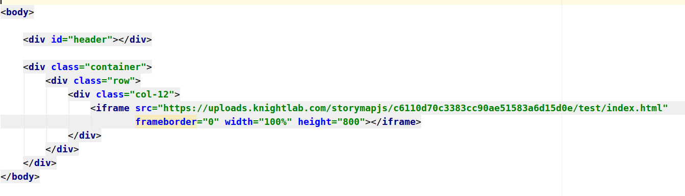

Due: Sunday, 3/1, 11.59pm
For this assignment, you will use StoryMap.js to tell a spatial story about the movement of people or substances across the United States or the world. Storymap gives you a point and click interface to create these stories and embed them into your website.
First, have a look at some of the examples to get a sense of the kinds of stories that you can tell.
Note that Storymap can be used to tell stories using both maps and images, for example Hieronymus Bosch's Garden of Earthly Delights. Using images, so called Gigapixels, is a bit too complicated for this tutorial but keep in mind that it is a possibility for the final project. Crystal has written a great tutorial on how to create them.
Crystal has recorded a short tutorial on how to use Storymap. Have a look!
Spend about 15 minutes playing around with Storymap. Add slides! Add images! Change the background! Change the map used!
You don't need to tell a story yet, just familiarize yourself with the functions that Storymap provides.
Storymap allows you to integrate a wide range of maps. Map Warper has a large collection of geocoded maps that are ready to be imported.
Let's say we want to work with this map of the successes of the suffrage movement from 1919. To import this map:
http://mapwarper.net/maps/tile/40766/{z}/{x}/{y}.png
http://mapwarper.net/maps/tile/40766/{z}/{x}/{y}.png into the
URL field and then close the menu.This should load your custom map. If you cannot see anything, you might either be too far zoomed in or look at the wrong location. For example, if you have selected a map of DC, the map will only be visible when you are actually looking at DC.
On the storymap website, click the "Share" button on the top right.
Scroll down and find the "Embed" code. It will look something like this:
<iframe src="https://uploads.knightlab.com/storymapjs/c6110d70c3383cc90ae51583a6d15d0e/test/index.html"
frameborder="0" width="100%" height="800"></iframe>
An iframe is essentially a website within a website, i.e. your
browser will first load your website and then load whatever is in the iframe,
in this case your Storymap.
To get your storymap up and running, your html code should look like this:
Additional Readings
How does fentanyl come to the United States? Where is it produced? How does it get distributed?
Additional Readings
Already know a story--whether related to the history of drugs or not--that you want to tell with a storymap? Let me know!
In each case, make sure to find and reference at least one additional newspaper or academic journal article that you have traced down yourself.
Once you have done your research, think about how you want to tell your story. How do you want to follow a person or a substance? What do you want to reader to take away? What images do you want to use?
Then, create a storymap with:
Finally, host your storymap on pset_storymap.html and send me a link by Sunday night.